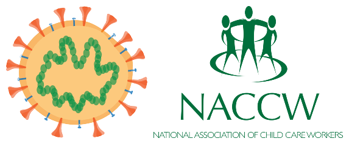

Most of the questions will be based on the statement by the president on escalation of measures to combat COVID-19 epidemic.
1. What is the nation's fundamental task at the moment, according to the president in his address?
Answer:Our fundamental task at this moment is to contain the spread of the disease
2. According to the president, flattening the curve of infections means what?
Answer: Doing everything within our means to reduce the overall number of infections and to delay the spread of infection over a longer period
3. Essentially, who in this country needs to adhere strictly – and without exception – to the regulations that have already been put in place?
Answer:Every person
4. The number of people infected will rapidly increase, why is this is extremely dangerous for a population like ours?
Answer:Our population has a large number of people with suppressed immunity because of HIV and TB, and high levels of poverty and malnutrition.
5. What has South Africa learnt from the experiences of other countries?
Answer:That the countries that have acted swiftly and dramatically have been far more effective in controlling the spread of the disease.
6. Which group has decided to enforce a nation-wide lockdown from midnight on Thursday 26 March?
Answer:National Coronavirus Command Council
7.What is the main reason behind this decisive measure (nation wide-lockdown)?
Answer:It is to save millions of South Africans from this Covid-19 infection and save the lives of hundreds of thousands of people.
8.In terms of which act is the nation-wide lockdown enacted ?
AnswerDisaster Management Act
9. From when until when are all South Africans required to stay at home?
AnswerFrom midnight on Thursday 26 March until midnight on Thursday 16 April
10. Which group of people that are necessary for our response to the pandemic will be exempted from this nation-wide lockdown?
Answer:All mentioned